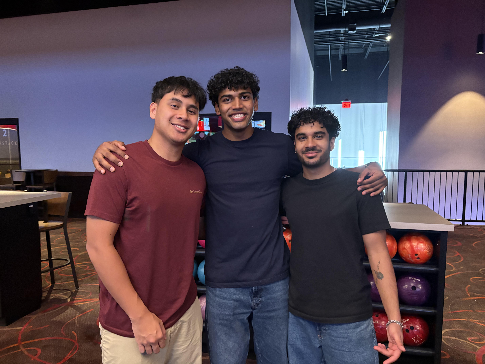

About Me
Hi, I'm Bill. Welcome to my page for IT301! I'm currently a senior studying Information Technology with a Creative Writing minor. I'm interning at CACI in BD Operations, working on workflow automation and process management. I'm interested in tech consulting and using technical knowledge to communicate clearly with business teams. Outside of school and work, I enjoy running and writing short stories. Fun facts: I know the entire scripts of the first three Spider-Man movies by heart, I'm double jointed, and I have been to 49/50 states!

Me and my friends out bowling.
My Labs
- Lab1: Created and Published the Page
- Lab2: Nested List
- Lab3: Style My Page
- Lab 5: Letter
- Lab 6: Flexbox
- Lab 7: Masonry